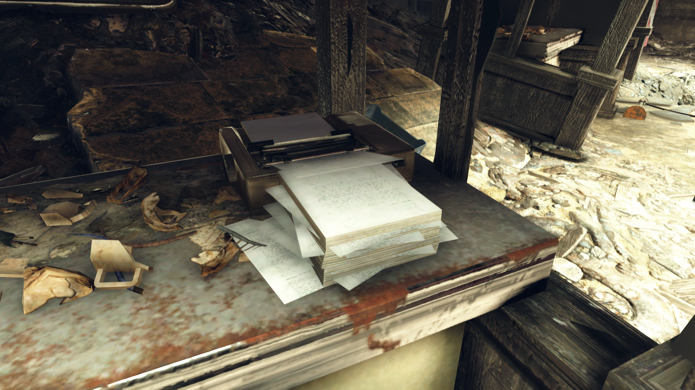
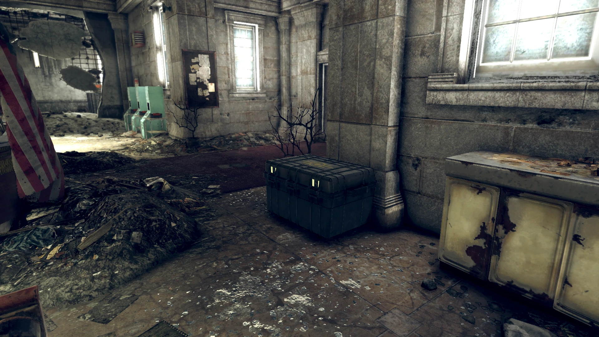
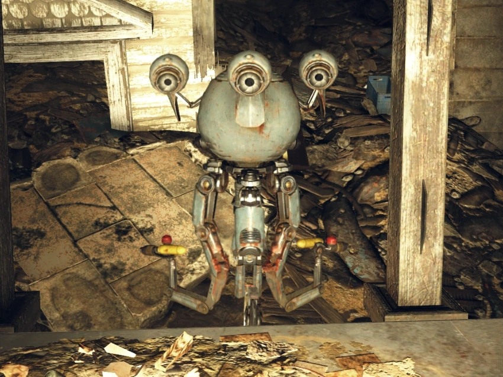

Charleston Capitol DMV
チャールストン議事堂 車両管理局
概要
チャールストン議事堂 車両管理局（DMV）は、チャールストン市内の議事堂ビルに隣接する施設です。
クエスト「Recruitment Blues」の舞台として、ブラザーフッド・オブ・スティールへの登録に必要な有効なIDを取得するために訪れます。
200年以上が経った今も、DMVボットたちは番号を呼び続け、書類の記入を求め続けています。
レイアウト
施設にはメインの待合室が一つあり、ボットを起動するターミナル（ブラザーフッドへの登録に必要な有効IDの取得に使用）と監督官のスタッシュが設置されています。
地下はエレベーターシャフトか、円形大広間横の階段から行くことができます。
西側には浸水した発電機室があり、武器作業台が設置されています。
放棄されたフードコートも見つかります。
東側には階段の横にファイリング室、アーカイブ室、設備室があります。
機械室にはアーマー作業台があります。
主なアイテム
- Overseer's log - Charleston — ホロテープ。監督官のスタッシュ・トランク内。
- チケット番号 C42 — メモ。DMVロビーの受付にある番号発券機から取得。
- チケット番号 A3 — メモ。同上。
- DMV-AT-21Cフォーム — メモ。クエスト「Recruitment Blues」中にDMV申請ターミナルから取得。
- DMV-AT-21C-Vフォーム — メモ。Recruitment Blues中に取得。
発見できるホロテープ・メモ
場所：DMVエリアのロビーにある監督官のスタッシュ・トランク内
監督官：監督官ログ。チャールストン議事堂。
もし自動化がいまだにウェストバージニアを支配しているなら、チャールストンはその機械の心臓部です。官僚機構がまだ動き続けている——人々が一人もいないのに。どこかに教訓があるはずです。まるで普通のアメリカの一日のようにターミナルシステムを操作するのは……不気味に心地いいのか、完全に正気じゃないのか、その中間です。でもこの古い議事堂には、私たちが見つけなければならない多くの秘密があります。
場所：DMV申請ターミナルから取得（Recruitment Blues中）
政府ID申請書（DMV-AT-21C）
チャールストン車両管理局
私書箱 27000
目的：
有効な政府IDを申請するために使用
手順：
セクションBに行き、DMV職員に提出してください
氏名： 〈プレイヤー入力〉
職業： 〈プレイヤー入力〉
住所： 〈プレイヤー入力〉
知事室のテーブルにある知事の印章で承認
政府ID申請書（DMV-AT-21C）
チャールストン車両管理局
私書箱 27000
目的：
有効な政府IDを申請するために使用
手順：
セクションBに行き、DMV職員に提出してください
氏名： 〈プレイヤー入力〉
職業： 〈プレイヤー入力〉
住所： 1203 GRAPE STREET
知事の執務室により承認
場所：登記官事務所（DMVエリアから少し離れた、メイン廊下の左側最初の部屋）の段ボール箱から取得
政府ID例外申請（DMV-AT-21C-V）
チャールストン車両管理局
私書箱 27000
目的：
不一致タイプ3A、3C、および4Xに対する免除
手順：
セクションBに戻り、DMV職員に21Cの書類とともに提出してください
氏名： 〈プレイヤー入力〉
職業： 〈プレイヤー入力〉
住所： 〈プレイヤー入力〉
21C-V修正条項：
住所： 1203 GRAPE STREET
上記の例外は郡書記官事務所により認可されました。21C-Vフォームは発行日から30営業日間有効です。

DMV館内アナウンス
施設内では、大戦前から稼働し続けているPAシステムが延々と番号を呼び続けています。
以下はその主なアナウンスです。
覚えておきましょう：詐欺を犯すのはコミーだけです。
メモ
- 現実世界のクリスマスシーズンには、建物の内部がホリデーの飾り付けで装飾されます。
- 入場前の推奨レベルは30以上です。
登場作品
チャールストン議事堂ビルは『Fallout 76』にのみ登場します。
ギャラリー


DMVは「お役所仕事」を皮肉ったFalloutらしいロケーションです。
核戦争から200年以上経っても、番号を呼び続けるロボット。
「J47、あなたは21年延滞しています」——この台詞を聞くだけで、大戦前にここでチケットを握りしめて待っていた人がいたことが分かります。
その人はもう骨になっているか、グールになっているか。でもロボットはまだ呼んでいます。
「詐欺を犯すのはコミーだけです」という警告アナウンスの合間に、知事の自動化推進演説が流れてくる。
「自動化は皆さんの生活を未来へ引き上げます」——その「自動化」の結果が、廃墟の中で永遠に番号を呼び続けるロボットです。
クエスト「Recruitment Blues」では、プレイヤーがこの200年物の官僚システムに付き合わされます。
チケットを取り、フォームを記入し、ロボットに「書類が足りません」と言われてやり直す。
世界は終わっても、お役所仕事は終わらない。
This article was created by translating and editing Charleston Capitol Department of Motor Vehicles from Nukapedia: The Fallout Wiki.
Licensed under the Creative Commons Attribution-Share Alike License (CC BY-SA 3.0).
コミュニティ維持のため、寄付を受け付けております。
> COMMENTS